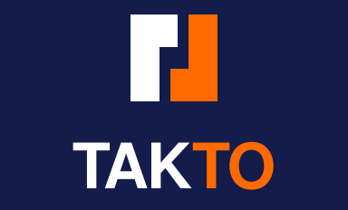
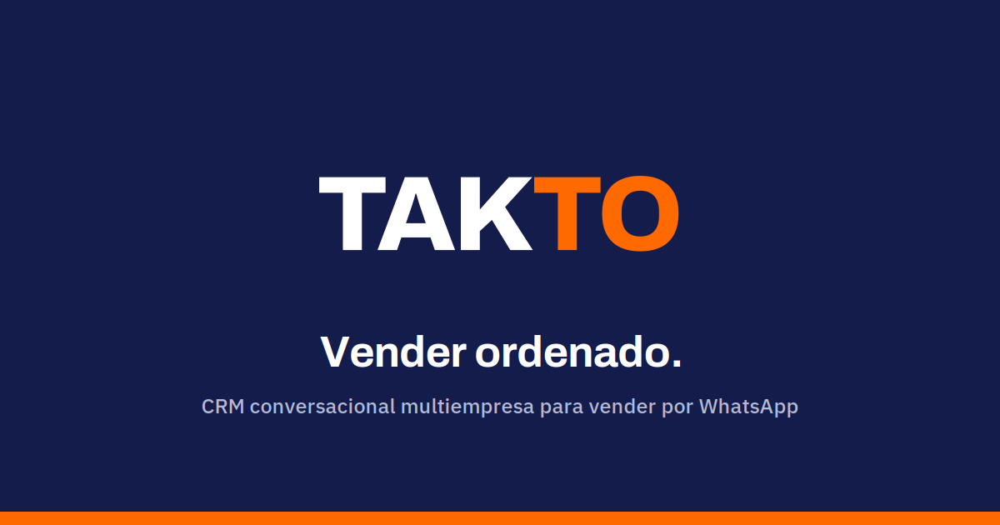
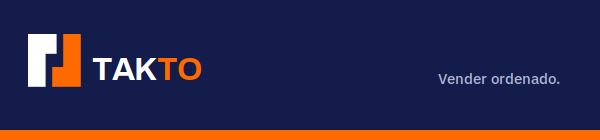
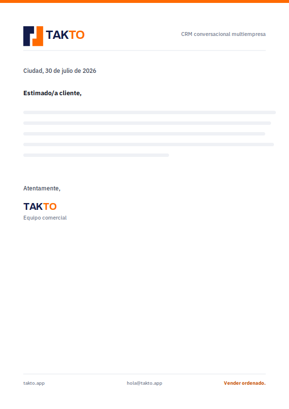
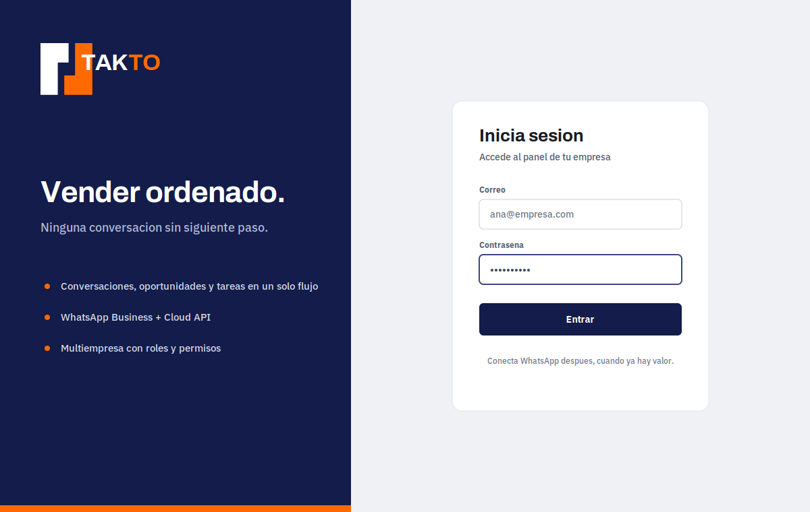
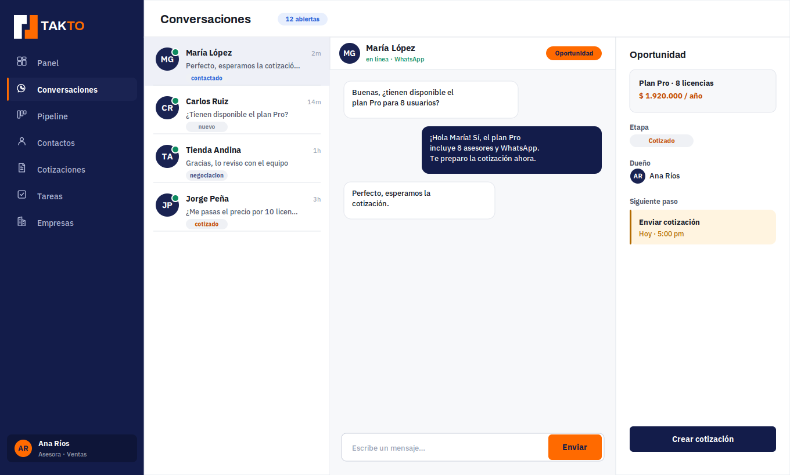
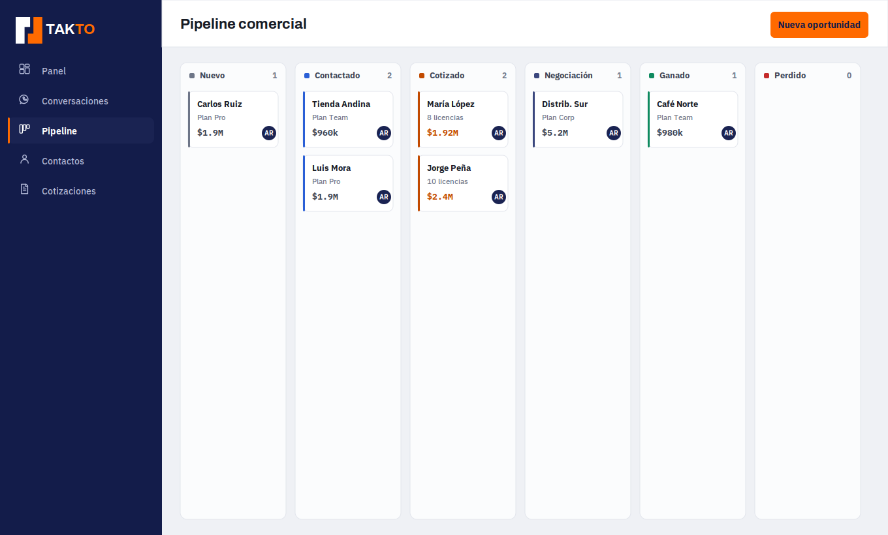

01Sistema de logotipo
Isotipo compacto (24u · banda 3u · par rotacional 180°), wordmark TAK|TO, lockups. Fondos claro y oscuro.

02Favicon en 16 / 32 / 48 px
Render real a tamaño. La banda de 3u no desaparece y las figuras no se fusionan.
03Color
Escalas de marca + tokens semánticos. Valores desde takto-tokens.css.
Primary (navy)
Secondary (naranja)
Neutral
Semánticos y pipeline
04TAK primario / TO secundario
Regla única: TAK en primario, TO en secundario. Solo por color.
05Botones y estados
Botón naranja con texto navy (regla de marca). Naranja nunca como texto fino sobre claro.
Chips de pipeline
06Tipografía
Archivo (marca) · IBM Plex Sans (UI) · IBM Plex Mono (datos). OFL 1.1.
07Iconografía
Línea, trazo 1.75, currentColor.
08Animación TAK → TO · reduced motion
Izquierda: secuencia normal (TAK y luego TO). Derecha: reduced motion (aparece completo, sin movimiento).
prefers-reduced-motion: reduce
09Open Graph
Tarjeta social 1200×630.

10Email y documento


11Producto — login, sidebar, conversación, pipeline
Ejemplos originales de TAKTO (no se copia Kommo).



QAValidación de contraste (WCAG)
Confirma las reglas de marca. Naranja fino sobre claro FALLA (por eso se prohíbe); botón naranja con texto navy pasa AA.
| Caso | Texto | Fondo | Ratio | WCAG |
|---|---|---|---|---|
| Texto principal #171B24 | #171B24 | #FFFFFF | 17.23:1 | AAA |
| Texto secundario #525A6B | #525A6B | #FFFFFF | 6.92:1 | AA |
| Navy marca #131C4A | #131C4A | #FFFFFF | 16.25:1 | AAA |
| Blanco | #FFFFFF | #131C4A | 16.25:1 | AAA |
| TO naranja #FF6A00 | #FF6A00 | #131C4A | 5.66:1 | AA |
| Boton naranja: texto navy #131C4A | #131C4A | #FF6A00 | 5.66:1 | AA |
| Naranja #FF6A00 como texto | #FF6A00 | #FFFFFF | 2.87:1 | FALLA |
| Naranja texto seguro #C24A00 | #C24A00 | #FFFFFF | 4.91:1 | AA |
| Enlace #1A2352 | #1A2352 | #FFFFFF | 14.93:1 | AAA |
TAKTO-BRAND-PACK-V2 · generado 2026-07-30 · CRM/ no modificado